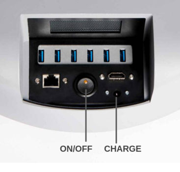
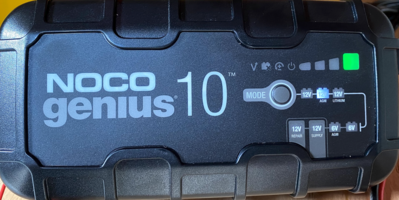
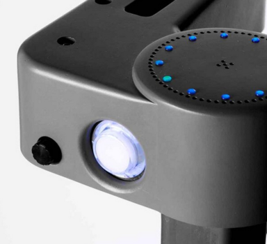

Stretch RE1: Quick Start Guide
Congratulations on your Stretch RE1! This guide will get you started with your new robot.
Safety
Stretch has the potential to cause harm if not properly used. All users should review the Stretch Safety Guide before operating the robot.
Unboxing
Please watch the Stretch Unboxing Video.
Robot Tour
A few items you'll want to know about before getting started.
Power
The entire robot powers up and down with the On/Off switch. When powering down, we recommend selecting 'Power Off' from the Ubuntu Desktop prior to hitting the Off switch

The provided battery charger can be plugged and unplugged at any time during operation. We recommend keeping the charger plugged in whenever it isn't running untethered. The charger should be '12V AGM' mode while charging:

Runstop
The illuminated button on the head is its Runstop. Just tap it, you'll hear a beep and it will start flashing. This will pause motion of the primary robot joints during operation. This can be useful if the robot makes an unsafe motion, or if you just want to free up the robot motors while you roll it around.
To allow motion once again, hold the button down for two seconds. After the beep, motion can resume.

Safe Handling
Like any robot, it is possible to break Stretch if you're not careful. Use common sense when applying forces to its joints, transporting it, etc.
The Stretch Unpowered Best Practices Video provides a quick overview of how to work with the robot.
Things that won't hurt the robot:
- Manually push and pull the arm (when the motor isn't holding a position).
- Manually raise and lower the lift (when the motor isn't holding a position).
- Manually tilt and roll the base around (when the motors aren't holding a position).
- Pick up and carry Stretch (while holding it by the mast, two people for safety).
Things to be mindful of:
- Manually moving the head and wrist. They will move but they want to go at their own speed.
- The arm will slowly descend when the robot is powered off. If the arm is retracted it may rest the tool on the base. If desired to hold the arm up when un-powered, the provided 'clip-clamp' can be clipped onto the mast below the shoulder to support it.
Things that can hurt the robot:
- Driving the wrist and gripper into the base. When the arm and wrist are stowed it is possible to collide the two.
- Getting the gripper stuck on something and then driving the arm, lift, or base.
- Laying the robot down with it weight on its camera.
- Trying to ride on the robot, getting it wet, etc. (eg, common sense)
Hello World Demo
Stretch comes ready to run out of the box. The Xbox Teleoperation demo will let you quickly test out the robot capabilities by teleoperating it with an Xbox Controller.

Note: You will find the USB Dongle already plugged into the the USB port of the base trunk.
To start the demo after unboxing:
- Remove the 'trunk' cover and power on the robot
- Wait for about 45 seconds. You will hear the Ubuntu startup sound, followed by two beeps (indicating the demo is running).
- Hit the Connect button on the controller. The upper two LEDs of the ring will illuminate.
- Hit the Home Robot button. Stretch will go through its homing calibration routine.
- Note: make sure the space around the robot is clear before running the Home function
You're ready to go! A few things to try:
- Hit the Stow Robot button. The robot will assume the stow pose.
- Practice driving the robot around.
- Pull the Fast Base trigger while driving. When stowed, it will make Stretch drive faster
- Manually stop the arm or lift from moving to make it stop upon contact.
- Try picking up your cellphone from the floor
- Try grasping cup from a counter top
- Try delivering an object to a person
If you're done, hold down the Shutdown PC button for 2 seconds. This will cause the PC to turn off. You can then power down the robot. Or proceed to the next step...
Now that you're familiar with the robot, take a minute to watch the Stretch Powered Best Practices Video.
Get Plugged In
Let's get plugged in.
- Remove the 'trunk' cover and power on the robot if its not already on.
- Plug in a mouse, keyboard and HDMI monitor to the robot trunk
- Plug in the battery charger
Log in to the robot computer. The default user credentials came in the box with the robot.
Start Coding
This will give you a quick look at the Stretch Body Interface, which is the low level Python interface to the robot.
Stretch is configured to run the XBox Controller demo in the background at startup. To run your own code you'll need kill off this process so that it doesn't contend with your code.
>> pkill -f stretch_xbox*
While you're at it, disable this autoboot feature. You can always turn it back on later.
Search for 'Startup' from Ubuntu Activities. Uncheck the box for 'hello_robot_xbox_teleop'

Now open up a Terminal. From the command line, first verify that that all of the hardware is present and happy
>> stretch_robot_system_check.py
You may see a few joints reported in red because they haven't yet been calibrated. If so, home the robot
>> stretch_robot_home.py
Once the robot has homed, let's write some quick test code:
>>ipython
Now let's move the robot around using the Robot API. Try typing in these interactive commands at the iPython prompt:
Python 2.7.17 (default, Apr 15 2020, 17:20:14)
...
import stretch_body.robot
robot=stretch_body.robot.Robot()
robot.startup()
robot.stow()
robot.arm.move_to(0.25)
robot.push_command()
robot.arm.move_to(0.0)
robot.push_command()
robot.lift.move_to(0.4)
robot.push_command()
robot.pretty_print()
robot.lift.pretty_print()
robot.head.pose('tool')
robot.head.pose('ahead')
robot.end_of_arm.move_to('wrist_yaw',0)
robot.end_of_arm.move_to('stretch_gripper',50)
robot.end_of_arm.move_to('gripper',-50)
robot.stow()
robot.stop()
Change Credentials
Finally, we recommend that you change the login credentials for the default user, hello-robot.
>>$ sudo passwd hello-robot
If you'd like to setup a new user account, check out the Stretch Installation Guide.
.
Join the Community Forum
Join the Hello Robot Community. We'd welcome hearing your feedback as you get to know your robot.
Hello Robot support monitors the forum closely and will quickly get back to you on any questions or issues you post.
Further Exploration
Encounter any issues while getting started? Please let us know at support@hello-robot.com. Also take a minute to review the Stretch Troubleshooting Guide
We recommend next exploring the ROS based demos that ship with Stretch. These are found in the stretch_ros repository.
That's it. Happy coding!